pfSense Enterprise Firewall Deployment
Project Overview
pfSense was deployed as the central firewall, router, and network segmentation platform within the MaryShield Cyber Lab. The firewall controls communication between internal network segments, provides Internet access through NAT, enforces access-control policies, and supports centralized security monitoring.
The project demonstrates practical enterprise firewall administration, network segmentation, routing, NAT, DNS, DHCP, traffic monitoring, and defensive security controls.
Enterprise Architecture
The diagram below shows how pfSense connects the WAN, LAN, Servers, and DMZ networks and controls communication between each security zone.
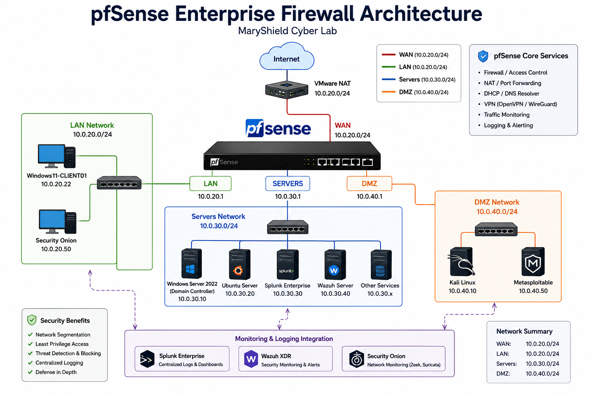
pfSense Installation
pfSense was deployed as a virtual appliance in VMware Workstation Pro. Multiple virtual network interfaces were assigned to provide separate connectivity for the WAN, LAN, Servers, and DMZ networks.
Installation Tasks
- Create the pfSense virtual machine.
- Assign multiple virtual NICs.
- Install pfSense.
- Configure initial interfaces.
- Set administrative credentials.
- Verify access to the pfSense web interface.
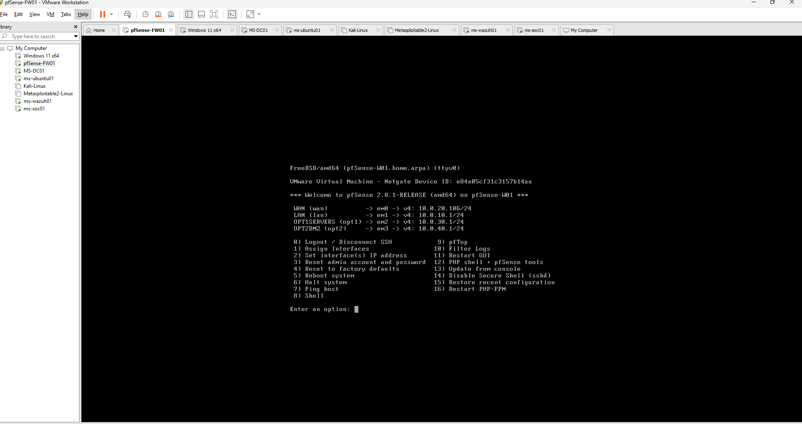
Interface Configuration
The firewall uses dedicated interfaces for each security zone within the MaryShield Cyber Lab.
| Interface | Network | Gateway / Address | Purpose |
|---|---|---|---|
| WAN | 10.0.20.0/24 | DHCP / VMware NAT | Internet access |
| LAN | 10.0.10.0/24 | 10.0.10.1 | User and management network |
| Servers | 10.0.30.0/24 | 10.0.30.1 | Enterprise server network |
| DMZ | 10.0.40.0/24 | 10.0.40.1 | Testing and vulnerable systems |
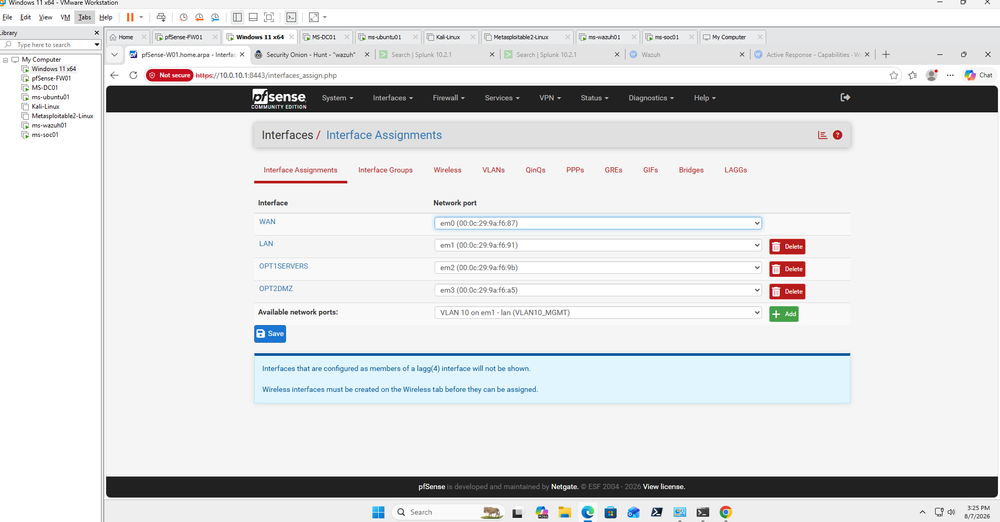
Firewall Rules
Firewall rules enforce least-privilege access between network segments. Rules were created to permit required business traffic while restricting unnecessary or risky communication.
Rule Design
- Allow trusted LAN systems to reach required services.
- Restrict DMZ systems from accessing sensitive internal resources.
- Permit server traffic only when required.
- Block unauthorized inbound connections.
- Log security-relevant firewall events.
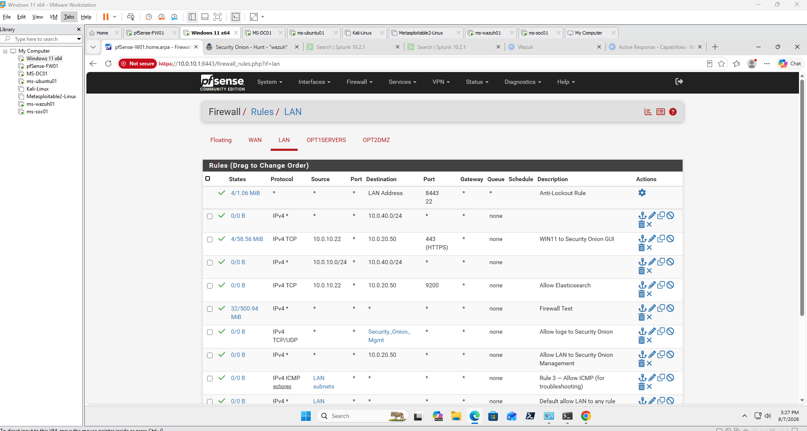
Network Address Translation
Network Address Translation allows private internal systems to access external networks while hiding internal addressing from the Internet-facing network.
- Outbound NAT
- Port forwarding where required
- Source translation
- Destination translation
- Controlled exposure of services
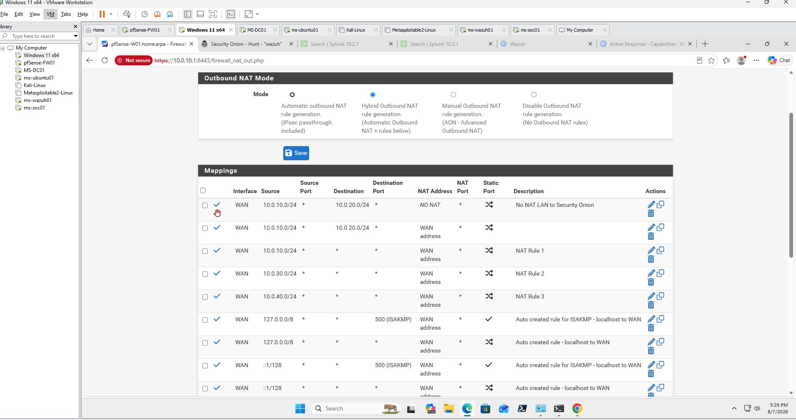
DHCP Services
DHCP services can provide centralized address assignment for selected network segments and simplify endpoint configuration.
- DHCP scopes
- Default gateway assignment
- DNS server assignment
- Static mappings
- Address reservations
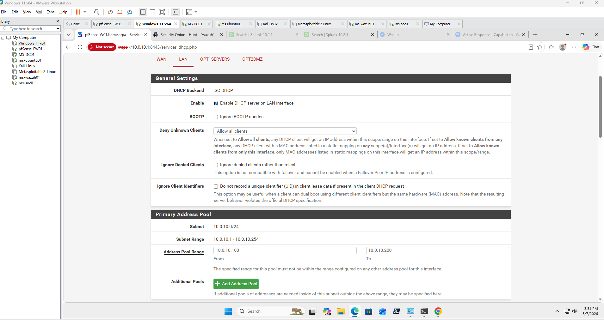
DNS Resolver
pfSense DNS services support internal name resolution, forwarding, and host overrides while maintaining centralized control over DNS traffic.
- DNS Resolver
- DNS forwarding
- Host overrides
- Domain overrides
- Internal DNS integration
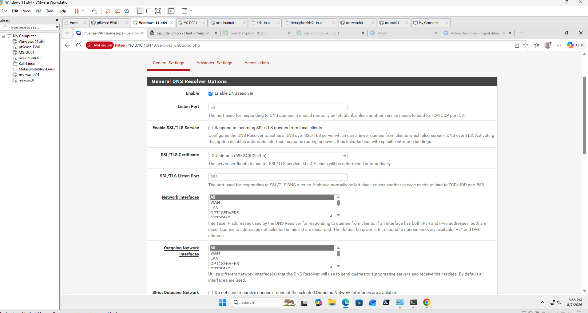
VLANs and Network Segmentation
Network segmentation separates systems according to role, trust level, and security requirements. This limits lateral movement and provides greater control over inter-network traffic.
| Segment | Network | Purpose |
|---|---|---|
| LAN | 10.0.10.0/24 | User and management systems |
| WAN | 10.0.20.0/24 | VMware NAT and external connectivity |
| Servers | 10.0.30.0/24 | Enterprise infrastructure and security tools |
| DMZ | 10.0.40.0/24 | Penetration testing and vulnerable systems |
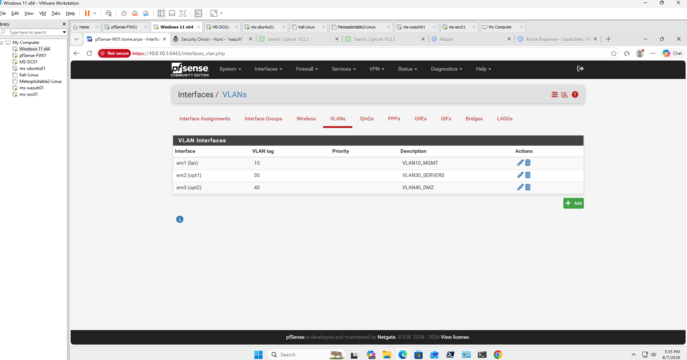
VPN Services
pfSense supports encrypted remote-access and site-to-site VPN connectivity. VPN services can securely extend enterprise access without directly exposing internal systems.
Planned Capability: VPN services have not yet been configured in the current MaryShield Cyber Lab environment. Future implementation is planned to evaluate secure remote-access and site-to-site connectivity using technologies such as OpenVPN or WireGuard. This section documents the intended enterprise capability without representing VPN as currently deployed.
- OpenVPN
- WireGuard
- Remote-access VPN
- Site-to-site VPN
- Certificate-based authentication
Firewall Logging
pfSense logging provides visibility into allowed connections, blocked traffic, firewall events, system activity, and network-state information.
- Firewall logs
- System logs
- DHCP logs
- DNS logs
- VPN logs
- Gateway events
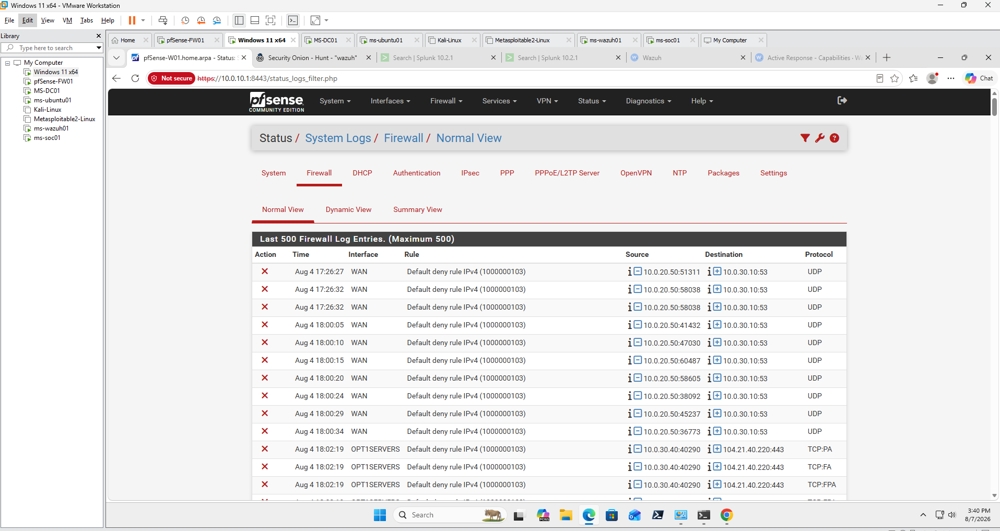
Security Monitoring Integration
pfSense complements the other security platforms in the MaryShield Cyber Lab by providing network-control and firewall telemetry that can be correlated with endpoint and network-security data.
Splunk Enterprise
Firewall and network events can be correlated with centralized SIEM data.
Wazuh XDR
Endpoint alerts can be compared against firewall traffic and connection activity.
Security Onion
Network alerts, Zeek metadata, Suricata detections, and firewall traffic provide complementary visibility.
Firewall Monitoring and Detection
The firewall was used to observe and control simulated attack traffic between lab network segments.
Monitored Activity
- Port scans
- Blocked connection attempts
- Unauthorized inter-segment access
- Suspicious outbound connections
- Repeated authentication attempts
- Traffic involving Kali Linux and Metasploitable
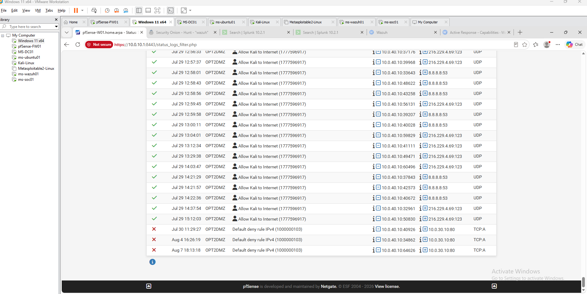
Performance Monitoring
pfSense provides real-time monitoring of firewall resource usage, network interfaces, gateways, and traffic throughput.
- CPU utilization
- Memory utilization
- Interface throughput
- Packet statistics
- Gateway health
- Connection states
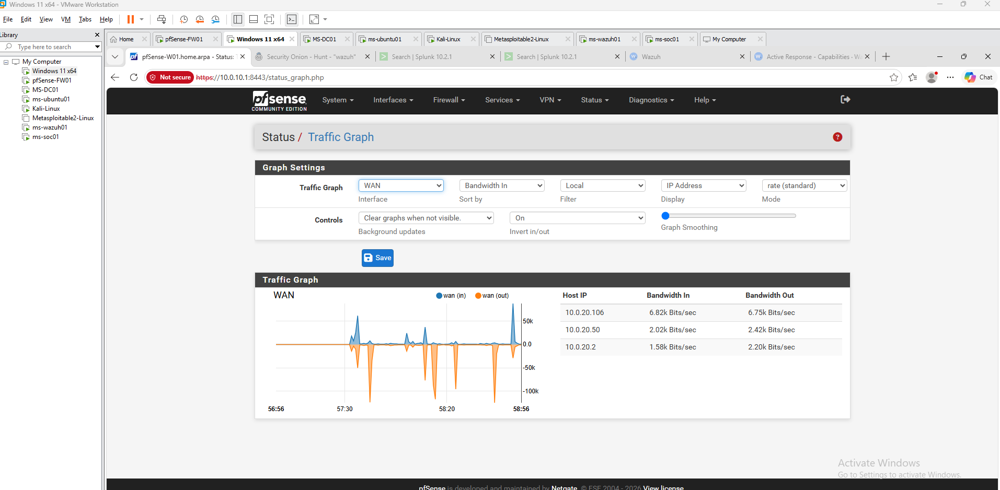
High Availability Concepts
Production firewall deployments commonly use redundancy to reduce downtime and eliminate a single point of failure. pfSense supports high-availability designs using CARP and configuration synchronization.
- CARP virtual IP addresses
- Firewall failover
- State synchronization
- Configuration synchronization
- Redundant Internet connections
High availability is documented as an enterprise design concept within this lab rather than a fully deployed redundant firewall cluster.
Lessons Learned
The pfSense deployment strengthened my understanding of enterprise firewall administration and the relationship between routing, segmentation, access control, and security monitoring.
- Learned how firewall rules control traffic between security zones.
- Improved understanding of stateful firewall behavior.
- Configured routing across multiple enterprise subnets.
- Applied network segmentation principles.
- Worked with NAT and gateway configuration.
- Analyzed blocked and permitted firewall traffic.
- Improved network troubleshooting skills.
- Applied least-privilege access-control principles.
- Integrated firewall visibility with other security platforms.
Skills Demonstrated
Firewall Administration
Configured and managed enterprise firewall services and policies.
Network Segmentation
Separated user, server, WAN, and DMZ networks according to security requirements.
Routing
Configured communication between multiple routed network segments.
NAT
Implemented address translation for controlled Internet access.
Firewall Rules
Applied least-privilege access controls between network zones.
DNS and DHCP
Configured supporting network services for enterprise systems.
Network Monitoring
Analyzed firewall logs, states, interfaces, and traffic patterns.
Security Troubleshooting
Diagnosed routing, connectivity, firewall-rule, and network-service issues.
Related Projects
Explore other enterprise cybersecurity projects developed as part of the MaryShield Cyber Lab.
Metasploitable
Controlled vulnerable environment used for attack simulation and detection testing.
View Project